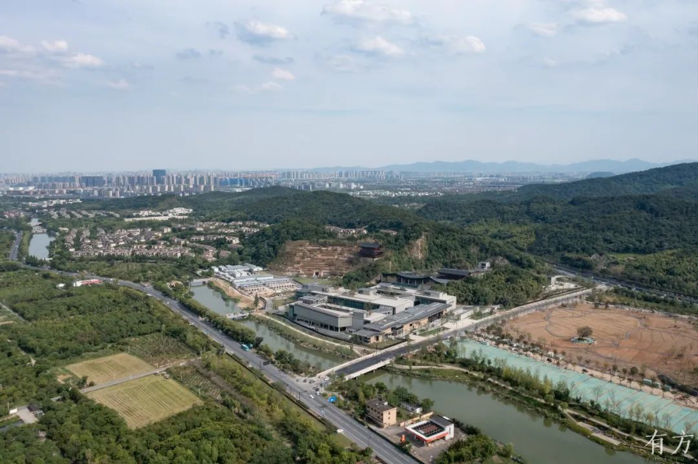
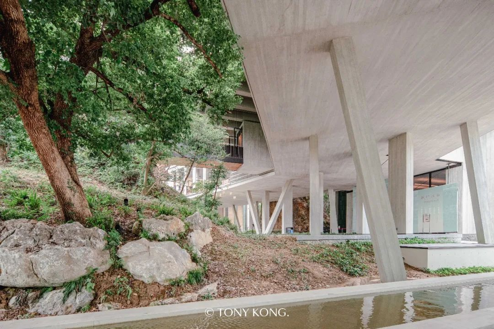
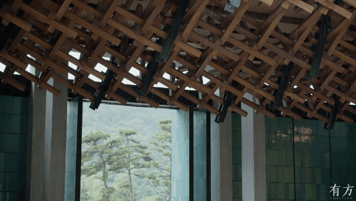

01
基本信息
| 项目名称 | 杭州国家版本馆（文润阁） / Hangzhou National Archives of Publications and Culture |
|---|---|
| 建筑师 | 王澍 / 陆文宇 / 业余建筑工作室 |
| 地点 | 中国浙江杭州良渚一带 |
| 年份 | 2022年7月23日正式落成 |
| 类型 | Cultural building |
| 功能 | 版本收藏、保护、展示、研究与交流综合文化建筑 |
| 状态 | 建成 |
| 面积 | 10.31 万平方米 |
| 资料可信度 | medium |
关键事实
02
项目概述与设计概念
杭州国家版本馆把废弃矿坑、良渚遗址限高、国家藏书楼功能和龙泉青瓷工艺整合成一套现代宋韵的当代山水建筑语言。
资料中的概念
项目以“现代宋韵”为核心定位，围绕宋代园林神韵的当代藏书建筑展开，并将南园北馆、掩映之美、平远/深远、龙泉青瓷等转化为空间和建造语言。
综合判断
其关键不是仿古，而是在良渚遗址限高和废弃矿坑地形中，以低矮展开、曲折游线、可开启青瓷屏扇和可拆卸构造建立当代山水建筑。
03
核心设计策略
限高条件下的平远展开
- 面对的问题
- 国家级版本馆需要较大保藏和展示面积，但基地邻近良渚遗址并受到低限高和视觉保护约束。
- 具体做法
- 采用低矮、横向展开的建筑群和南园北馆疏密布局，以层层递进的体量、廊道和山水关系替代高耸纪念性。
- 建筑效果
- 建筑通过路径深度和山水层次获得公共性和庄重感，同时降低对遗址周边视觉环境的冲击。
- 证据
- 有方专访记录15米限高、南园北馆和平远法；新华社确认项目位置、面积和落成时间；Architectural Record 说明建筑群规模、13个 pavilion 和山体嵌入关系。
- 可迁移方法
- 在限高或景观敏感场地中，可把地标表达从高度转向路径、遮挡和横向层次。
南园北馆的开放/封闭分区
- 面对的问题
- 版本馆同时需要高安全保藏功能和面向公众的展示、游览与文化体验。
- 具体做法
- 将南侧处理为疏朗园林和公共游览空间，将北侧处理为较密集的藏书与展陈馆区，并以桥、廊和漂浮系统联系。
- 建筑效果
- 公众体验获得曲折游园和探索感，而保藏功能仍能保持较高控制性。
- 证据
- 有方专访明确“南园北馆”“大疏大密”和漂浮系统；有方摄影漫游记录南园北馆、游园迷失感和山水补位。
- 可迁移方法
- 文化建筑可用景观和游线作为功能缓冲，而不是把开放与封闭简单二分。
非正轴入口与掩映之美
- 面对的问题
- 国家级文化建筑通常倾向正中轴入口，但场地山体和宋画意境更适合曲折进入。
- 具体做法
- 南大门不居中，通过山体、门洞和路径遮挡形成局部显露的进入经验。
- 建筑效果
- 入口从纪念性门厅转化为山水游观的开端，强化进入过程的时间性。
- 证据
- 有方专访中建筑师说明南大门不在中轴线上，并将其解释为典型宋画掩映意境；新华社也记录项目借鉴宋代绘画“掩映之美”。
- 可迁移方法
- 入口设计可以通过偏移、遮挡和转折建立文化叙事，不必总依赖对称正面。
青瓷屏扇的工艺系统化
- 面对的问题
- 龙泉青瓷具有地方文化和手工变化，但直接贴附容易沦为符号且难以维护。
- 具体做法
- 以多釉色青瓷片、铜扣件、统一钢骨架和可开启系统组织屏扇，并通过样板和颜色控制处理手工不均质。
- 建筑效果
- 青瓷从装饰材料变成可开启、可拆卸、可替换的当代表皮系统。
- 证据
- 有方专访提到7万片青瓷和铜扣件；Architectural Record 记录12种釉色、约100,000平方英尺陶瓷砖、钢骨架和可替换安装系统。
- 可迁移方法
- 地方材料进入大型公共建筑时，必须同步设计材料叙事、误差管理、安装方式和维护机制。
双廊作为山体保护与游观装置
- 面对的问题
- 废弃矿坑山体既是场地记忆和山水意象，也有安全风险和保护边界。
- 具体做法
- 用混凝土挡土墙和带顶游廊隔开山体，让公众近距离游观，同时保护山体原真性和游人安全。
- 建筑效果
- 防护构筑物被转化为游线和空间叙事装置，使保护、安全和体验合为一体。
- 证据
- 有方专访明确双廊主体是混凝土挡土墙并承担安全功能；Domus 将项目理解为山与水的互补结构。
- 可迁移方法
- 面对危险或脆弱自然遗存时，可把工程防护转译为可体验的建筑路径。
04
场地关系
项目坐落于良渚一带，公共叙事与五千年文明史、国家版本保藏体系和江南文脉相连。
基地原为废弃矿坑，建筑师将残破山体理解为可转译为山水画结构的场地资源。
良渚遗址周边的视觉保护和限高要求迫使建筑采取低矮、横向和层层展开的策略。
05
空间与流线
南园北馆形成疏密对照：南边以园林和水面提供开放游观，北边以密集建筑承载核心保藏和展示功能。
南大门偏离中轴并被山体局部遮挡，把进入过程转化为宋画式的掩映经验。
漂浮系统在北馆中建立可游路径，使封闭书库和公共展览之间出现过渡层。
06
结构、材料与建造
龙泉青瓷被发展为建筑尺度的屏扇系统，依靠铜扣件、钢骨架、釉色控制和样板流程进入大体量公共建筑。
双廊的混凝土挡土墙承担山体安全隔离，同时成为游园路径的一部分。
Architectural Record 记录项目存在木-钢大跨雨棚、钢骨架青瓷屏扇和局部夯土/混凝土做法，但完整结构体系仍缺少一手资料。
07
技术指标
| 场地面积 | 150 亩；建筑时报搜索摘要显示占地150亩，但原页面打开异常，需复核。（limited） |
|---|---|
| 建筑面积 | 10.31 万平方米；新华社确认总建筑面积10.31万平方米。（confirmed） |
| 高度 | ；未检索到建筑实际高度；有方专访提及15米限高约束。（unknown） |
| 层数 | ；未检索到可靠资料。（unknown） |
| 容积率 | ；未检索到可靠资料。（unknown） |
| 建筑密度 | ；未检索到可靠资料。（unknown） |
| 结构体系 | 局部钢骨架、混凝土挡土墙、木-钢雨棚和混凝土主体结构证据；完整结构体系未确认；仅记录公开资料中可确认的局部建造系统。（limited） |
| 业主 / 委托方 | 中国国家版本馆杭州分馆相关建设主体；公开来源确认馆方角色，但未检索到合同意义上的业主字段。（limited） |
| 备注 | 本包仅记录公开资料可确认指标；高精度经济技术指标需以馆方、施工图或竣工资料复核。 |
主要材料
龙泉青瓷屏扇/瓷板、铜扣件、钢骨架、混凝土、木与钢。
图纸与摄影信息
有方摄影漫游标注摄影为孔锦权；Architectural Record 图片标注 Iwan Baan；Domus 图片标注 Ji Yun。
08
场地信息表
区位角色
Text
项目位于良渚一带，承担中华版本保藏体系的江南特色版本库和华东地区版本资源集聚中心角色。
Evidence Type
sourced
Source Ids
当前案例包暂未提供这一组结构化资料。
Related Image Ids
当前案例包暂未提供这一组结构化资料。
自然环境
Text
基地为废弃矿坑，山体残破但被建筑师转化为山水画式场地结构。
Evidence Type
sourced
Source Ids
当前案例包暂未提供这一组结构化资料。
Related Image Ids
当前案例包暂未提供这一组结构化资料。
文化环境
Text
项目叙事连接良渚文明、宋韵、国家版本保藏和龙泉青瓷。
Evidence Type
sourced
Source Ids
当前案例包暂未提供这一组结构化资料。
Related Image Ids
当前案例包暂未提供这一组结构化资料。
地形条件
Text
公开访谈提到矿坑比外部道路平均高出约5米，并受15米限高影响。
Evidence Type
sourced
Source Ids
当前案例包暂未提供这一组结构化资料。
Related Image Ids
当前案例包暂未提供这一组结构化资料。
道路与进入
Text
整体交通资料不足；南大门入口位置和非中轴进入是公开资料中最明确的通行策略。
Evidence Type
synthesis
Source Ids
当前案例包暂未提供这一组结构化资料。
Related Image Ids
当前案例包暂未提供这一组结构化资料。
周边建筑
Text
公开资料重点不是周边城市街区，而是良渚遗址、山体和水面关系。
Evidence Type
synthesis
Source Ids
当前案例包暂未提供这一组结构化资料。
Related Image Ids
当前案例包暂未提供这一组结构化资料。
服务人群
Text
服务版本收藏、保护、研究、展示、交流及公共参观人群。
Evidence Type
sourced
Source Ids
当前案例包暂未提供这一组结构化资料。
Related Image Ids
当前案例包暂未提供这一组结构化资料。
场地核心矛盾
Text
核心矛盾是在遗址保护、限高、废弃矿坑和国家级保藏功能之间建立当代山水秩序。
Evidence Type
synthesis
Source Ids
当前案例包暂未提供这一组结构化资料。
Related Image Ids
当前案例包暂未提供这一组结构化资料。
09
概念创意探索
诊断
项目面对国家级藏书楼功能、宋代园林命题、良渚遗址保护、废弃矿坑和低限高的叠加约束。
定位
项目以现代宋韵为核心定位，作为国家当代藏书楼与江南特色版本库出现。
策略
用南园北馆、大疏大密、入口掩映、漂浮系统和青瓷屏扇把文化命题转化为空间与建造策略。
意象与表达
宋画中的平远、深远、掩映和山水互补被转译为低矮展开、曲折路径和局部显露。
10
建筑语言生成
功能梳理
保藏、展示、研究、交流和公共参观功能被分配到南园、北馆、山体库房与过渡路径中。
布局逻辑
整体采用坐北朝南、南园北馆、南疏北密的布局，回应藏书楼原型和场地山体。
形体构成
限高下的低矮体量、连续北馆、漂浮系统和可开启青瓷屏扇共同形成层层展开的建筑构成。
场所与氛围
场所体验强调遮挡、转折、曲径通幽和游园迷失感，而非一眼看尽的纪念性正面。
11
建造品质控制
建造语言
公开资料确认青瓷屏扇背后有统一钢骨架，局部有混凝土挡土墙、柱撑漂浮系统和木-钢大跨雨棚；完整结构体系仍缺一手资料。
材料与工艺
龙泉青瓷通过釉色选择、样板确认和安装控制被转化为建筑尺度材料系统。
构造逻辑
青瓷片通过铜扣件装配到钢骨架，可完整取下或替换，使材料传世叙事获得构造支撑。
物理性能与施工控制
公开资料可确认全尺寸样板、颜色控制、夯土做法示范和双廊安全防护；文物库房环境控制、消防和机电策略未检索到可靠资料。
12
核心方法提炼
可迁移方法
强文化命题应先落到场地、功能、路径和构造问题，再生成形式叙事。
限高文化建筑可通过低矮展开、层层遮挡和游观路径获得深度，而非依靠高度表达。
地方材料进入大型公共建筑时，需要同步设计误差管理、装配方式和维护机制。
不宜直接照抄
宋韵、青瓷和山水布局高度依赖杭州、良渚、龙泉青瓷和建筑师长期方法，不宜脱离场地与工艺条件直接复制。
可转化的分析图
- 南园北馆疏密关系图
- 入口掩映视线与路径图
- 青瓷屏扇构造层级图
- 双廊安全/游观复合剖面图
- 限高下平远展开图
13
图片资料





14
参考来源与信息缺口
- 杭州国家版本馆：宋韵悠长，文“润”江南level_c新华社 / 新华网
权威中文新闻来源，用于确认项目别名、落成时间、建筑面积、良渚区位和公共功能角色；非建筑专业媒体或建筑师一手来源。
- 王澍+陆文宇：杭州国家版本馆，现代宋韵｜有方专访level_b有方
建筑专业媒体深度访谈，核心来源；用于设计意图、场地约束、南园北馆、漂浮系统、青瓷构造和材料策略。
- 在杭州国家版本馆里，来一场“空间漫游”level_b有方
建筑专业媒体摄影漫游，提供项目设计、坐标、摄影来源和游园体验描述；与 s2 同属有方，身份确认不完全独立。
- Amateur Architecture Studio Clads a Chinese Archive with Thousands of Celadon Tileslevel_bArchitectural Record
建筑专业媒体英文案例文章，用于确认建筑群规模、13个 pavilion、青瓷屏扇、钢骨架、扣件、样板和材料/施工信息。
- Hanzhou National Archives, an alternation of hills and bodies of waterlevel_bDomus
建筑专业媒体英文评论，用于山水关系、场地解释和项目整体质量判断；页面标题存在 Hanzhou 拼写。
- 七大工艺创新助力现代“宋韵”方案落地level_c建筑时报
建筑行业报纸来源，搜索摘要显示施工图及施工建造、占地150亩等信息；网页打开时返回异常，作为待复核补充源使用。
- 杭州国家版本馆又叫文润阁？level_d杭州本地宝
参考性地方信息聚合页面，仅用于辅助核对公众表述，不用于核心事实或策略判断。
信息缺口与冲突
- Primary source：未检索到可稳定访问的建筑师事务所或馆方一手项目页；核心设计判断主要依赖有方访谈和建筑专业媒体。
- Technical metrics：建筑高度、层数、容积率、建筑密度、完整结构体系和机电/环境控制系统未检索到可靠资料。
- Scale wording：新华社使用总建筑面积10.31万平方米，Architectural Record 使用 approximately 1.1 million square feet，量级接近；本包以新华社中文面积作为主字段。
- English title：英文资料中存在 National Archives、National Archives of Publications and Culture、Wenrun Pavilion 等不同表述；本包保留中文正式名和常见英文描述。